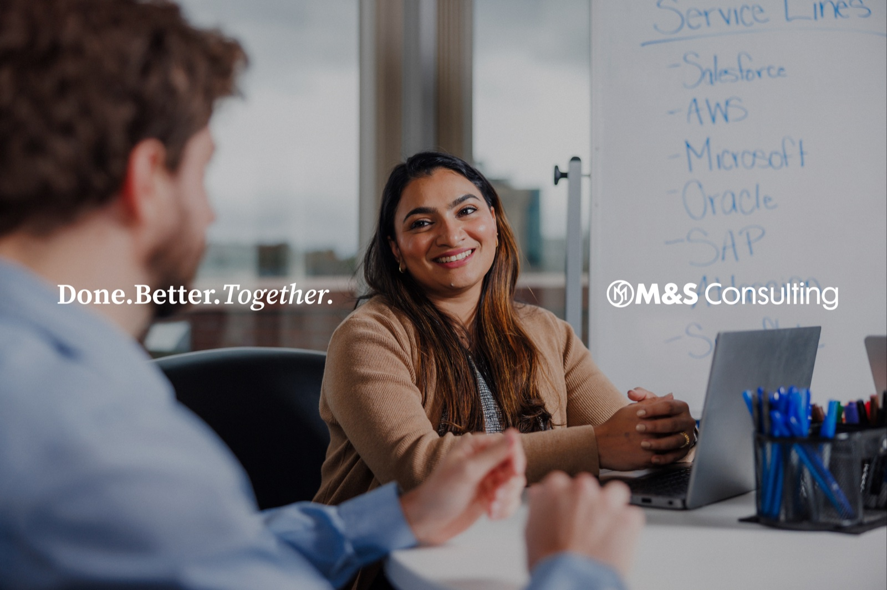
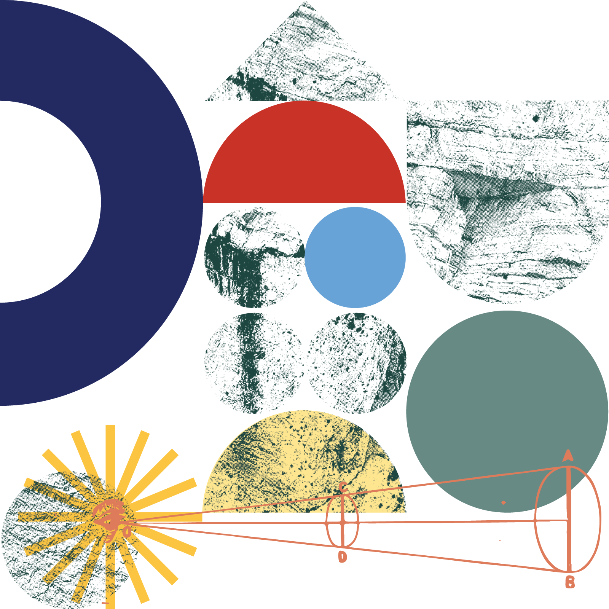
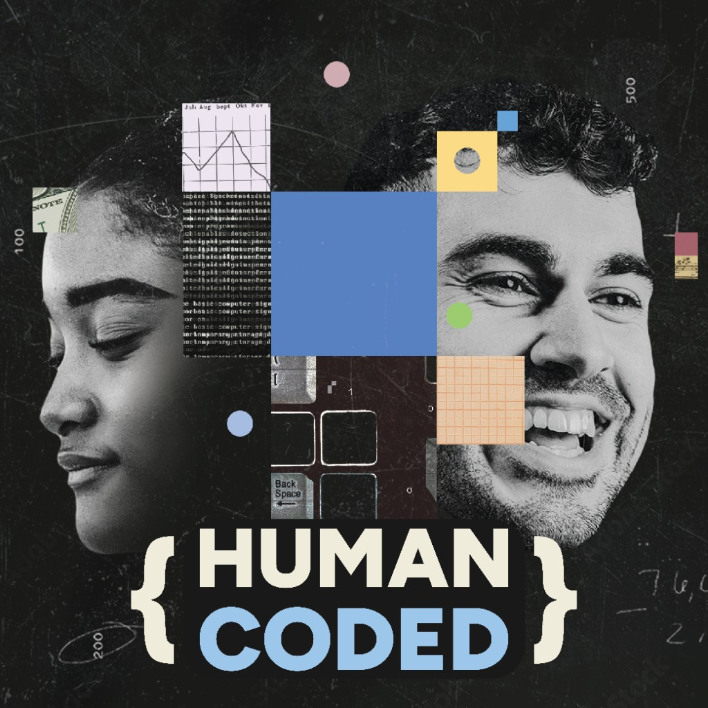

AI & Data
Make intelligence practical.

Over several years leading marketing for M&S Consulting, I helped turn deep technical knowledge into a steady, recognizable point of view. The work created more ways for people to find the company—and more reasons for its people to share what they know.
From a growing email audience to Human Coded, the brand’s podcast, each channel was designed to reinforce the others. Employee stories, smart social content, and a clearer web experience gave the company an engine it could keep building on.
01 / Human Coded
Human Coded made room for richer conversations about AI, change, enterprise platforms, and the people behind transformation. It gave M&S a durable, human format for its expertise—and a source of content that travels well across every channel.
02 / Employee-powered content
The strongest stories were already inside the company. I helped create repeatable ways for employees to participate: spotlighting expert perspectives, supporting social sharing, and making it easy to contribute without asking people to become marketers overnight.
The result was a more active presence across employee accounts, more engagement on LinkedIn, and more paths back to M&S.
03 / Digital flagship
This interactive window is a portfolio-friendly take on the real M&S site. Switch between views to see how a clearer information architecture, sharper storytelling, and a dedicated podcast home make a big consultancy feel easier to navigate.
Considered, AI-first digital solutions for clients and partners.

Make intelligence practical.
Modernize what matters.
Build for what’s next.

Practical conversations about AI, change, enterprise platforms, and what it takes to make innovation work.
Try the navigation above.